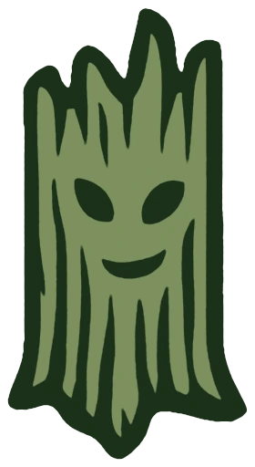

Polveri sottili
Concentrazione del particolato per dimensione, il dato chiave per la salute respiratoria.

IoT per il monitoraggio ambientale
Progettiamo, installiamo e gestiamo reti di stazioni per la misura di polveri sottili, gas e parametri microclimatici. Stazioni autonome, anche a energia solare, e un'unica piattaforma per consultare i dati.
Cosa misuriamo
Ogni stazione monta fino a cinque sensori, scelti in base a cosa serve misurare in quel luogo.
Concentrazione del particolato per dimensione, il dato chiave per la salute respiratoria.
Composti organici volatili, ossidi di azoto, anidride carbonica e ozono.
Temperatura, umidità relativa e pressione atmosferica per leggere ogni dato nel suo contesto.
Illuminamento e indice UV, utili per esposizione, agricoltura e turismo.
Sensori
Selezioniamo componenti di produttori di riferimento come Sensirion e Bosch. La configurazione di ogni stazione è definita sul progetto.
| Sensore | Produttore | Cosa misura | Stato |
|---|---|---|---|
| SEN65 | Sensirion | PM1, PM2.5, PM4, PM10, VOC, NOx, temperatura, umidità | Disponibile |
| BME680 | Bosch | Gas (VOC), temperatura, umidità, pressione | Disponibile |
| BME280 | Bosch | Temperatura, umidità, pressione | Disponibile |
| BMP280 | Bosch | Temperatura, pressione | Disponibile |
| BMP180 | Bosch | Temperatura, pressione | Disponibile |
| DHT22 | Aosong | Temperatura, umidità | Disponibile |
| SHT31 | Sensirion | Temperatura, umidità ad alta precisione | Su richiesta |
| PMS5003 · PMS7003 | Plantower | PM1, PM2.5, PM10 (laser) | Su richiesta |
| SDS011 | Nova Fitness | PM2.5, PM10 (laser) | Su richiesta |
| SCD41 | Sensirion | CO₂ (fotoacustico), temperatura, umidità | Su richiesta |
| SCD30 | Sensirion | CO₂ (NDIR), temperatura, umidità | Su richiesta |
| MH-Z19B | Winsen | CO₂ (NDIR) | Su richiesta |
| SGP30 | Sensirion | VOC, CO₂ equivalente | Su richiesta |
| MiCS-6814 | SGX Sensortech | CO, NO₂, NH₃ | Su richiesta |
| MQ131 | Winsen | Ozono | Su richiesta |
| BH1750 | Rohm | Luminosità (lux) | Su richiesta |
| UVM-30A | — | Indice UV | Su richiesta |
Come funziona
Sopralluogo, scelta dei sensori e posa su palo, parete o copertura. La messa in servizio avviene sul posto, senza opere aggiuntive.
La stazione rileva i parametri a intervalli configurabili e segnala automaticamente anomalie e interruzioni.
Ogni misura viene archiviata e resta consultabile: mappe, andamenti, soglie di allarme e storico completo.
Alimentazione solare con batteria: nessun allaccio elettrico, adatta a montagna, campagna e aree isolate.
Configurazione, frequenza di misura e diagnostica gestite da remoto, senza interventi sul posto.
Monitoraggio continuo dello stato di ogni stazione, con notifica immediata delle interruzioni.
I dati restano di proprietà del cliente e sono esportabili in qualsiasi momento.
La rete
Per riservatezza dei siti indichiamo l'area servita e non la posizione delle singole stazioni.
Caricamento mappa…
Servizi
Seguiamo ogni progetto dalla definizione dei requisiti alla gestione nel tempo.
Analisi delle esigenze, scelta dei punti di misura e dei sensori più adatti al contesto.
Stazioni assemblate e collaudate, posa in opera e messa in servizio sul campo.
Consultazione in tempo reale, storico, soglie di allarme ed esportazione dei dati.
Monitoraggio dello stato delle stazioni, interventi programmati e aggiornamenti da remoto.
Sviluppo di dispositivi IoT e software dedicati per esigenze specifiche.
In sviluppo una stazione solare a bassissimo consumo e la connettività su rete cellulare.
Chi siamo
Team Ewok sviluppa soluzioni IoT e software per il monitoraggio ambientale. Elettronica, software e piattaforma dati sono progettati internamente: un controllo completo sulla qualità del sistema e del dato.
Descrivici obiettivi e sito di installazione: ti inviamo una proposta tecnica ed economica.